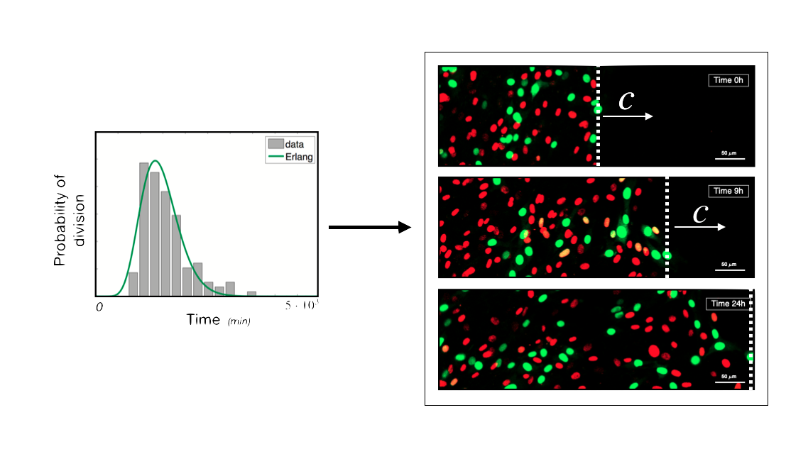

As humans, we are just the result of a collective behaviour and our components are our cells. Typically, our cells behave cooperatively, for the benefit of the organism. Sometimes, however, some cells start to reproduce and move faster than others which, eventually, might develop into a malign cancer and threat the entire organism’s life. Understanding why this happens and, more importantly, how we can stop such malign behaviour is without any doubt one of the most important scientific challenge which humanity is facing in this century.
With my research, I aim to gain a better understanding of aggressive cancers, such as melanoma, by applying multiscale mathematical models to study collective cell behaviour.
References:
"Synchronised oscillations in growing cell populations are explained by demographic
noise"
E. Gavagnin, S.T. Vittadello, G. Guanasingh, N.K. Haass, M.J. Simpson, T. Rogers,
C.A. Yates. Biophys. J. (2021 - in press)
Link